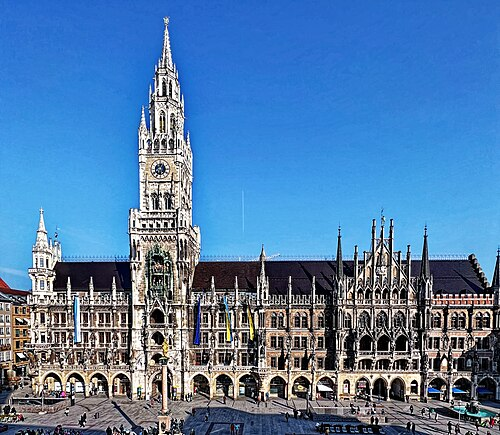
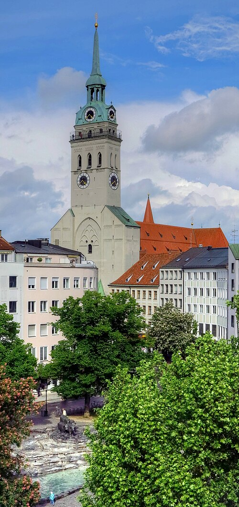

This map shows 20 of the most-searched sights in Munich as photo spots, ranked by how often people search for them: Marienplatz, Residenz, Hofbräuhaus, Frauenkirche and Viktualienmarkt lead the list. Every spot has a pin on the subject and a phone icon showing where to stand, with tips for shooting it on your phone: which lens to use, how to frame it, a settings tip and the best time of day. Directions and Navigate buttons take you to the standing point on foot or by public transport. 3 spots are free to view; the full map is for members.
The 3 free photo spots
1Marienplatz

Marienplatz has been Munich's main square since 1158, and the Glockenspiel draws millions of tourists a year. The New Town Hall fills the north side, with the Old Town Hall on the east side. In the middle stands Mary's Column, put up in 1638 to mark the end of the Swedish occupation. A golden Virgin Mary tops it, a statue made in 1590 that once stood in the Frauenkirche. Four small putti at the base each fight a different beast, standing for war, pestilence, hunger and heresy.
The square photographs well because so much is packed into one space: the column, the long town hall frontage and the crowds all sit together. The most useful view is from above. The viewing platform of Alter Peter, the tower of St. Peter's Church, looks down over the whole square, with the Frauenkirche domes and the New Town Hall behind it. On clear days you can see the Alps too. Munich's official guide calls it the classic viewpoint for Marienplatz.
The climb is about 300 steps up a stair, so allow some time and a little energy. The square is busiest around the Glockenspiel shows at 11 am and noon (and 5 pm from March to October), so the ground-level shots are easier at other times of day.
Where it is: Marienplatz is in the centre of Munich's old town. Alter Peter, the viewpoint, is the tower of St. Peter's Church at Rindermarkt 1, just south of the square.
Shooting it on your phone
Lens: Start with the default lens (1x) for the whole view over the square. Switch to the telephoto (2x-5x, depending on your phone) to pick out the Frauenkirche domes, the golden figure on the column or the town hall tower. Try the ultra-wide (0.5x) if you want more of the rooftops and the surrounding streets.
Where to stand: Stand right at the subject (viewing platform at 56 m in the tower of St. Peter's Church (Rindermarkt 1)). An elevated panorama looking down on Marienplatz, with the Frauenkirche domes and the New Town Hall behind it, and the Alps on clear days. On the viewing platform in the tower of St. Peter's Church. From there you look north over Marienplatz, with the New Town Hall across the square and the Frauenkirche domes behind it.
Framing: Turn on gridlines and put Mary's Column near a crossing point, with the New Town Hall filling the upper part of the frame. Keep the phone level so the buildings don't lean. If you would rather stay at ground level, a head-on shot of the New Town Hall facade with the column in front works well, and the Fischbrunnen is good for a close shot of the fountain.
Settings tip: Tap on the town hall to set focus, then drag the exposure slider down a little if the sky is bright, so the building keeps its detail. Hold the phone close to the glass or barrier, if there is one, to cut reflections.
Best time: Choose a clear day if you want the Alps in the distance. The square is crowded around the Glockenspiel shows, so ground-level shots are easier outside those times.
11New Town Hall

The New Town Hall forms the northern side of Marienplatz and is the most striking building on the square. It is neo-Gothic and built of brick and limestone, with a tower, pointed gables and carved detail from top to bottom. The first section was built between 1867 and 1874 to a design by Georg Hauberrisser, and the tower was added between 1898 and 1905. The main façade is almost 100 metres long. It carries statues of Henry the Lion and nearly the whole line of the Wittelsbach rulers of Bavaria, which makes it the largest princely cycle on a German town hall. The tower is 85 metres high and topped by the Münchner Kindl figure.
It photographs well because the square gives you room to step back and take it in. Look up for the details, such as the figures on the tower bay and the clock with its Glockenspiel. The figures perform at set times, including 11am and 12pm, and the square fills with people then, so allow for that. If you want a different angle, the Town Hall tower and Alter Peter both look down over the square, but they are ticketed, so check the official site before you go.
Where it is: The New Town Hall forms the northern side of Marienplatz in the centre of Munich, with the small park called Marienhof behind it.
Shooting it on your phone
Lens: Start with the ultra-wide (0.5x) to fit the full façade and tower in one frame, then switch to telephoto (2x-5x, depending on your phone) for the tower top and statues. The default lens (1x) works well for the Marian Column with the Town Hall behind it.
Where to stand: Stand in Marienplatz (in front of the Mariensäule, facing the north façade). The full neo-Gothic façade and tower of the New Town Hall across the square, with the Marian Column in the foreground. From here you see the whole neo-Gothic façade and tower across the square, with the column in the foreground.
Framing: Turn on the gridlines and line the tower up with a vertical grid line so it does not lean. Keep the Marian Column to one side as a foreground. If you want a view from above instead, the Town Hall tower and Alter Peter look down on the square, but both are ticketed.
Settings tip: Tap on the façade to focus, then drag the exposure slider down a little so the sky does not turn white. A Live Photo can catch the Glockenspiel figures moving.
Best time: Early morning, when the square is quieter and the light is softer. The square gets crowded around the Glockenspiel times.
12St. Peter's Church

St. Peter's is the oldest recorded parish church in Munich, and many people think the city began around it. Its tall tower, known as "Alter Peter" (Old Peter), is a Munich emblem. The tower is 91 metres high and has a Renaissance steeple top, added in the early 17th century. The church stands on a small rise called the Petersbergl. A church was there before the city was founded in 1158. The building you see today was shaped by a great fire in 1327, rebuilding and a new dedication in 1368, and a Baroque choir added in the early 1600s. It was badly damaged in the Second World War.
The church photographs well because the tall tower sits above the lower rooftops and market streets around it. The best street-level view is from Sankt-Jacobs-Platz, where the facade and tower appear together and you can see the Rindermarkt side of the building. Keep the tower upright by holding the phone level and switching on gridlines. If the tower looks cut off, step back or use the ultra-wide lens (0.5x). A second option is the Blumenstraße side of the Viktualienmarkt, where the tower rises behind the market stalls. You can also shoot from inside the market itself, with the stalls or the Maypole in the foreground. The streets around the church can be busy, so wait for a gap in the people before you take the shot.
Where it is: St. Peter's stands in the inner city of Munich, on a small rise called the Petersbergl, close to the Rindermarkt and the Viktualienmarkt.
Shooting it on your phone
Lens: Start with the ultra-wide (0.5x) to fit the facade and the full height of the tower into one frame. Then try the default lens (1x) for a more natural look. Use the telephoto (2x-5x, depending on your phone) for the steeple top and the details of the tower.
Where to stand: Stand in Sankt-Jacobs-Platz. The church's facade and tower seen from the square, with the Rindermarkt side of the building in view. From there the church lies to the north-east, and you see its facade and tower with the Rindermarkt side of the building in view.
Framing: Turn on gridlines and line the tower up with a vertical line so it does not lean. Hold the phone level and, if you can, keep the tower as the tallest thing in the picture, with rooftops or street life below it. For a different view, try Blumenstraße or the Viktualienmarkt, where the tower rises behind the market stalls.
Settings tip: Tap on the tower to focus, then slide the exposure down a little so the sky does not wash out. If people walk through the frame, take a Live Photo and choose the cleanest moment afterwards.
Best time: Early in the day is usually calmer in the streets around the church. Light from the side often shows the stonework better than flat midday light.
17 more spots for members
These spots are on the map as grey numbered pins. Where to stand, the phone tips, photos and directions for them come with Explorer membership.
- 2Munich Residenz · members
- 3Hofbräuhaus · members
- 4Frauenkirche · members
- 5Viktualienmarkt · members
- 6BMW Welt · members
- 7Asam Church · members
- 8Deutsches Museum · members
- 9English Garden · members
- 10Nymphenburg Palace · members
- 13Königsplatz · members
- 14Chinese Tower · members
- 15Olympiapark · members
- 16Feldherrnhalle · members
- 17Theatine Church · members
- 18Isartor · members
- 19Siegestor · members
- 20Karlstor · members
Get every spot with Explorer membership
Explorer opens every spot on every map in the library: where to stand, how to frame it on your phone and how to get there, plus the Xdatrys Maps app with maps saved on your phone for use without signal. $9.99 a month or $59.99 a year; cancel any time.
Join Explorer Compare free and Explorer
Not ready to join?
Get Pocket Lens, our free daily smartphone travel photography newsletter.
Free, and you can unsubscribe at any time. If the form does not show, sign up on our newsletter page.
Questions
What are the top photo spots in Munich?
The first three on this map are Marienplatz, Residenz and Hofbräuhaus. They are ranked by how often people search for them. The full map has 20.
Where should I stand to photograph Marienplatz?
Stand right at Marienplatz (viewing platform at 56 m in the tower of St. Peter's Church (Rindermarkt 1)). Start with the default lens (1x) for the whole view over the square.
When is the best time to photograph the New Town Hall?
Early morning, when the square is quieter and the light is softer. The square gets crowded around the Glockenspiel times.
How do I get to Alter Peter?
No station or tram stop is listed for this spot, so aim for the inner city around Marienplatz, by taxi or hired scooter if you are coming from further out.
Credits
Map data © OpenStreetMap contributors (ODbL); base map built with Protomaps from OpenStreetMap data. Photos from Wikimedia Commons, credited under each photo with their licence. Background reading for the free spots: Marienplatz, New Town Hall (Munich), St. Peter's Church, Munich (Wikipedia, CC BY-SA). Access rules and opening times change: check before you go.